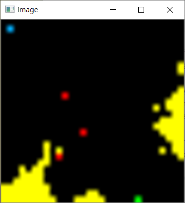
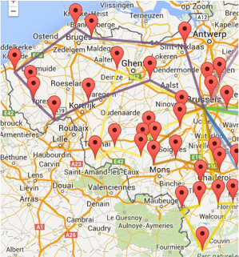
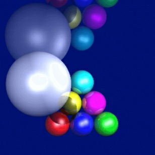
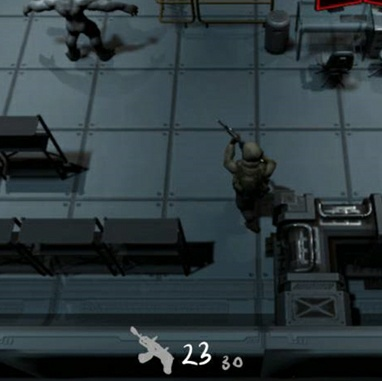

projects
강화학습 국책 프로젝트 참여
학교 연구실에서 진행하는 국책프로젝트에 참여
강화학습 모델 개발 및 파이썬 모듈 개발
범죄 데이터 기반 범죄 예측 및 순찰 알고리즘
학교 연구실에서 진행하는 국책프로젝트에 참여
강화학습 모델 개발 및 파이썬 모듈 개발
레이트레이싱 GPU 구현
시점에서 광선을 쏴서 반사되는 물체들의 색깔을 추적하는 '광선 추적법(Ray Tracing)'을
CUDA를 이용해 GPU로 구현해 CPU와 성능 비교
생존 슈팅게임 개발
5×5 크기 무작위 구조 던전을 돌아다니며, 점점 강해지는 적들을 물리치고,
자원을 모아 점점 강해지며 오래 살아남는 3D 탄막 슈팅 로그라이크 생존게임